1
Switch on the machine and computer
- Press Power on.
- Switch on the computer.
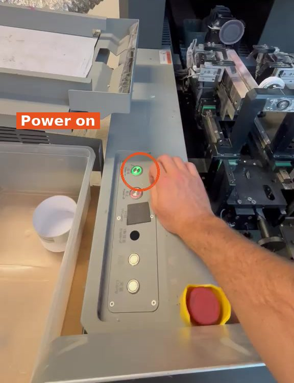
How to switch on the bottle printer and get it ready to print. Applies to Bottle 1 and Bottle 2: they are the same printers. Do the steps for both machines.
You need: non-dust cloth (lint-free) · PC code: 1997
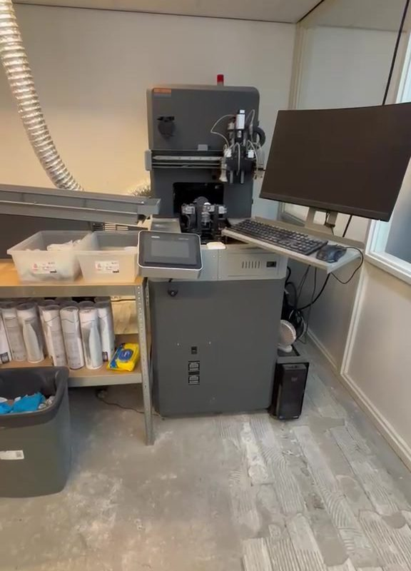

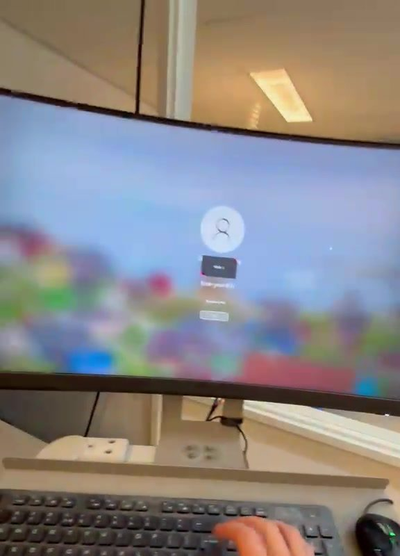
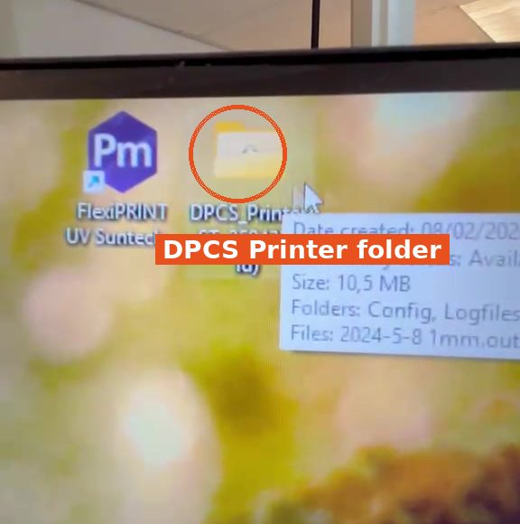
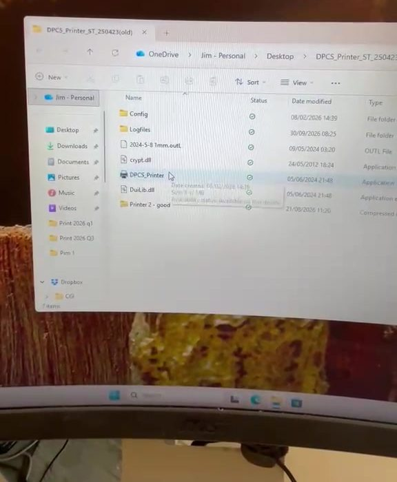
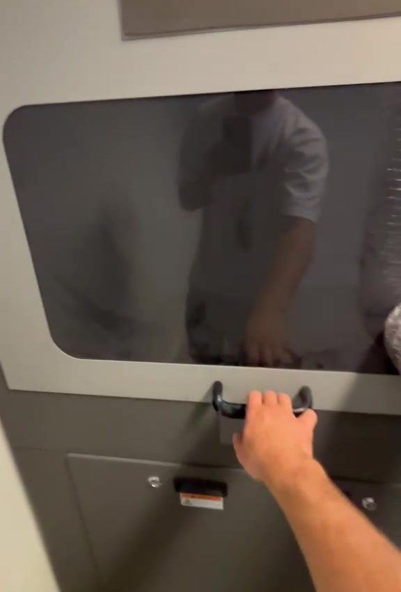
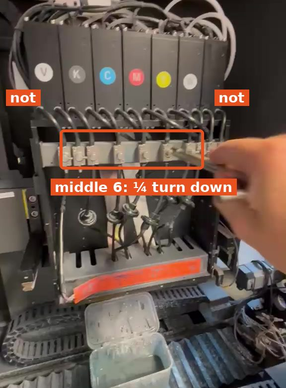
Press longer. Sometimes clean the print head extra (step 6) and do it again.
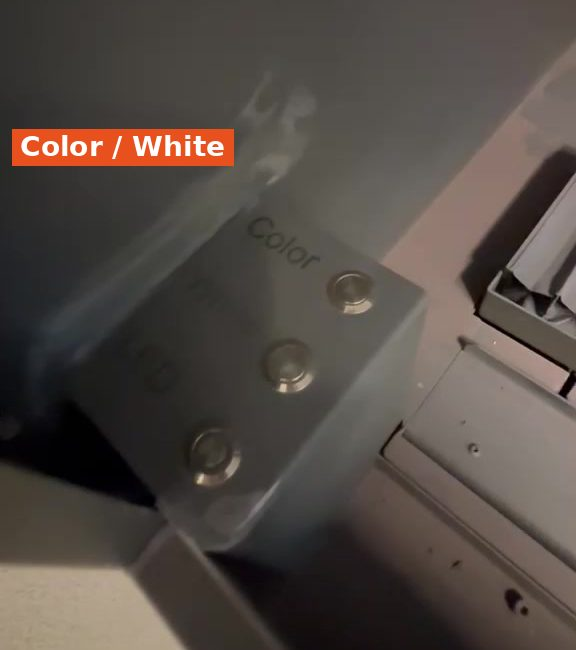
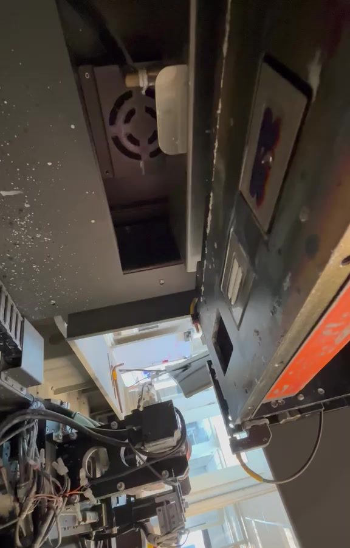
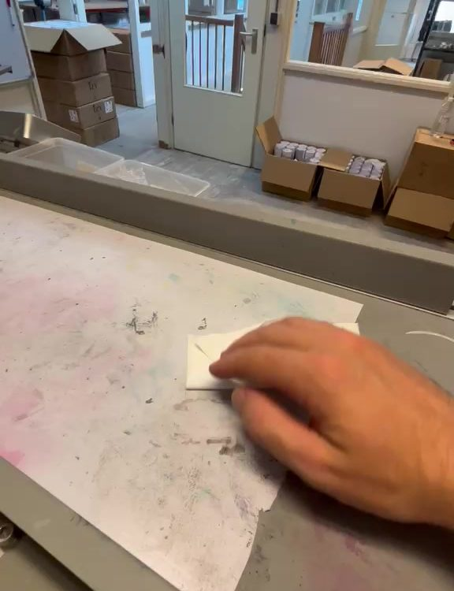
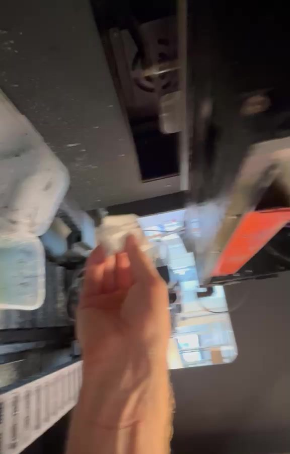
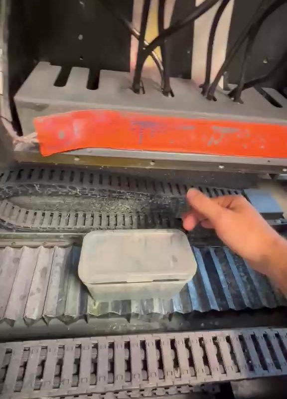
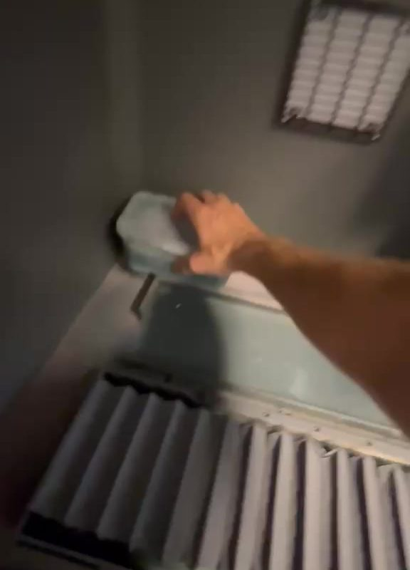
Do not forget this on this printer!
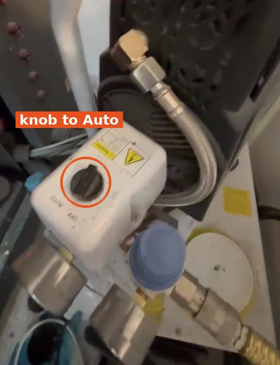
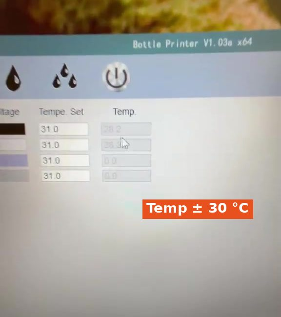
Do steps 1 to 9 for the other machine as well (Bottle 1 and Bottle 2).
✓ Ready to print.